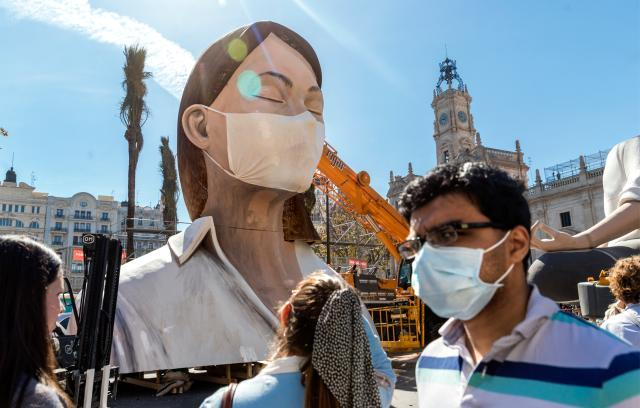

“武汉人要味，怕给别人添麻烦”
原文链接 备份链接 澎湃新闻记者 邓雅菲 实习生 苏笑语 “借四节电池的人家又送来他家自己做的馒头，说是看见我在群里羡慕别人家的了，正好配酸菜鱼片。鲜鱼也是他们上次弄好送来的，还外加一大袋他们做的手工牛轧糖，奶香十足，不甜腻，还有花生的酥 …
体坛周报全媒体驻西班牙记者 武一帆

老人
我是在姥姥家长大的。我妈妈也是她姥姥带大的。前几天老人家病了，病到不得不去住了几天医院。打开视频直播，她低着头坐在桌子前的样子让人绝望。然而能吃能睡又有好底子，终究还是缓了过来，平安过了88岁生日。
我对老人有特别的感情。12年前我租住在萨拉曼卡圣埃斯特凡修道院边上的一处底层公寓。房东是个留着刷子胡的老头，名字叫Primitivo（原始的），姓Fraile（教会兄弟）。在西班牙也算很老气很有派头的姓名组合了。我的那不勒斯室友坚持直呼老头的名字，而我见面则恭敬地称“Señor”（先生）。现在回想起来，老爷子年轻时说不定是“长枪党”，曾在“赤化分子”的审判大会上高呼“佛朗哥万岁”。那在政治氛围保守的卡斯蒂亚地区司空见惯。作为这个单元的主任，Señor早上穿着清洁工的蓝大褂一声不吭地擦着楼梯。他35岁的小儿子偶尔会冒出来，拥抱他，要一点零花钱，大声说：“再见吧爸爸。”看到我恭敬地称“Señor”，老头直起身子，面无笑容地招招手，告知煤气罐已经换完，热水器也修好了。
西班牙是当今人类世界上最长寿的国家，平均预期寿命达到了83岁。意大利也差不多。甭管如今退休工资带给政府社保系统的压力有多大，这都是一个国家值得自豪的事。可眼下的灾难瞄准了这个人群。70岁以上人群的死亡率已不忍直视，几乎可以说得上就是“死刑”。而在一个多月前，防疫专家们传达的安心话还是：“别怕，只是高龄有基础病的患者有性命之虞。”大学生们顿时松了一口气，又举起了啤酒，露出笑容，仿佛那些连通着呼吸机的虚弱心肺没有为了建设这个世界而搏动、喘息过。
“（病人）像冬天的苍蝇一样掉落下来。”一位马德里市民将83岁的老母亲送到医院，目睹着感染区的惨状。几小时前，保姆打电话说老人病的很重，呼吸困难。按照政府指导手册拨通急救电话几小时后，等来的是一条“救护车堵在路上，您最好自己想办法”的短信。医院警卫禁止私家车入内，还好那条短信成了通行证。老母亲暂时抢救过来了，但最终能不能回到阳台的躺椅上还是问题。现在躺在ICU里的老人还有皇马前主席桑斯，肾衰，状况已近垂危。他的儿子小桑斯曾是马拉加俱乐部主席，如今的西甲宣传大使。“你好，爸爸。”我多希望每个等候在门外的儿女能最终说出这样的话，而不是“再见”两个字。

圣周
原计划周四去尝试一下特殊时期的“常规购物”，但被告知当天是假期，超市不开门。这一天是“圣何塞日”，为耶稣基督的凡人父亲祝圣，也就演变为天主教国家的“父亲节”。父亲节成为法定公休日是从去年开始的，大概是追求极致的男女平等：既然母亲节休假，父亲节为什么不行？
休假是西班牙人的特长，利用假期赚钱也是。就因为西班牙人能把节日过出花样，无论是圣周、狂欢节这样的宗教节日，还是“番茄大战”这样的人造节日，都能吸引到海量外国人参与，登上《新闻联播》的同时赚个盆赢钵满。可以想象，当政府率先宣布瓦伦西亚的法雅节和塞维利亚的圣周活动因疫情取消时，当地民众经历的并不只是灵魂被剥夺的痛苦，还有断炊绝粮的危险。国家紧急状况宣布几天后，塞维利亚市政府才忍痛宣告“圣周”停办。或许彼时，市民才真正意识到事态有多么严重，毕竟连无比庄严华美、浩浩荡荡的圣像游行都没了。
塞维利亚上一次停办圣周是在1933年，因为内战。而我奇怪的是，相当于战时政策的“国家紧急状态”，为啥还有节日公休？这种休息日究竟还能让哪一部分人得到休憩，感到放松？圣地亚哥中心医院的报道让人稍作安心。目前入院治疗的“新冠”患者不到10人，其中2人危重，其余40名阳性确诊者均在家隔离。先不论“在家隔离”政策是否可取，至少报道认为目前医院压力不大，比流感集中爆发期间的住院率还低25%。但愿，但愿病毒能像人一样，也放假，最好来个“夏眠”。
原文链接 备份链接 澎湃新闻记者 邓雅菲 实习生 苏笑语 “借四节电池的人家又送来他家自己做的馒头，说是看见我在群里羡慕别人家的了，正好配酸菜鱼片。鲜鱼也是他们上次弄好送来的，还外加一大袋他们做的手工牛轧糖，奶香十足，不甜腻，还有花生的酥 …
原文链接 备份链接 澎湃新闻记者 喻琰 一张黑底海报，画中央是一位老人，标题是，寻找“无法取菜的”独居老人。 武汉封闭社区以来，买菜做饭成了许多独居老人面临的难题。他们不会用手机团购，儿女也不在身边。 26岁的武汉人小鱼（化名）和志愿者在 …
原文链接 备份链接 3月1日，华盛顿州Life and Care养老院的老人因新冠肺炎住院。图片来源：推特 记者：刘芳 “ “更频繁接触到死亡，会让很多老年人投影到自己身上，从而产生抑郁等心理疾病。但由于很多老年人不想被当做弱者，他们选择 …
原文链接 备份链接 【财新网】（记者 曹文姣 萧辉 高昱）位于武汉市社会福利院综合大楼B座的九州通人寿堂养老院，是武汉首个、华中地区体量最大的机构养老PPP项目，新冠疫情肆虐之下，这家护理条件堪比三甲医院的养老院也不幸“沦陷”。据财新记者 …
原文链接 备份链接 【财新网】（记者 包志明 萧辉 高昱）2月24日，有网民通过网络转发视频称：“西马路敬老院有120个老人感染新冠肺炎”，引起舆论关注。据财新记者探访，涉事养老院为武汉市江岸区西马街社区椿萱里老人照护中心，2月23日有八 …